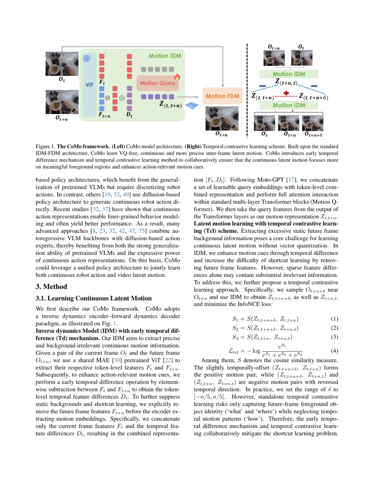
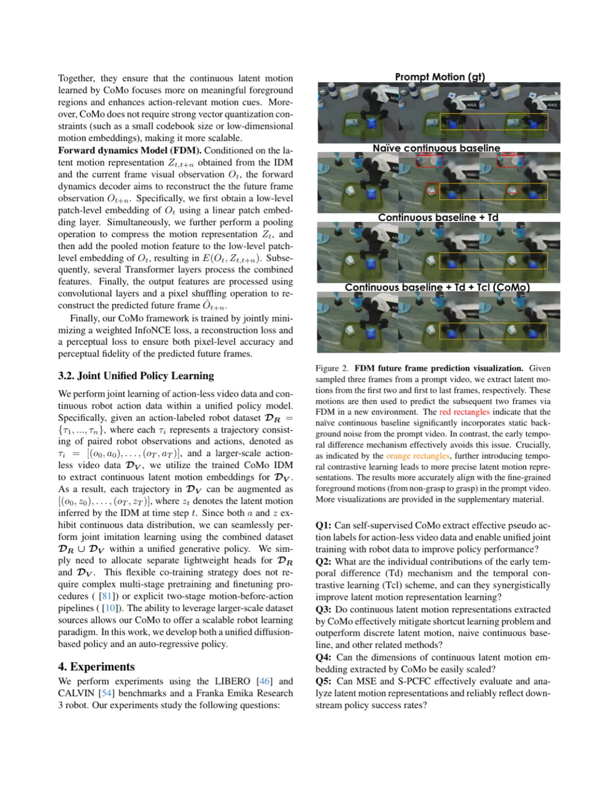
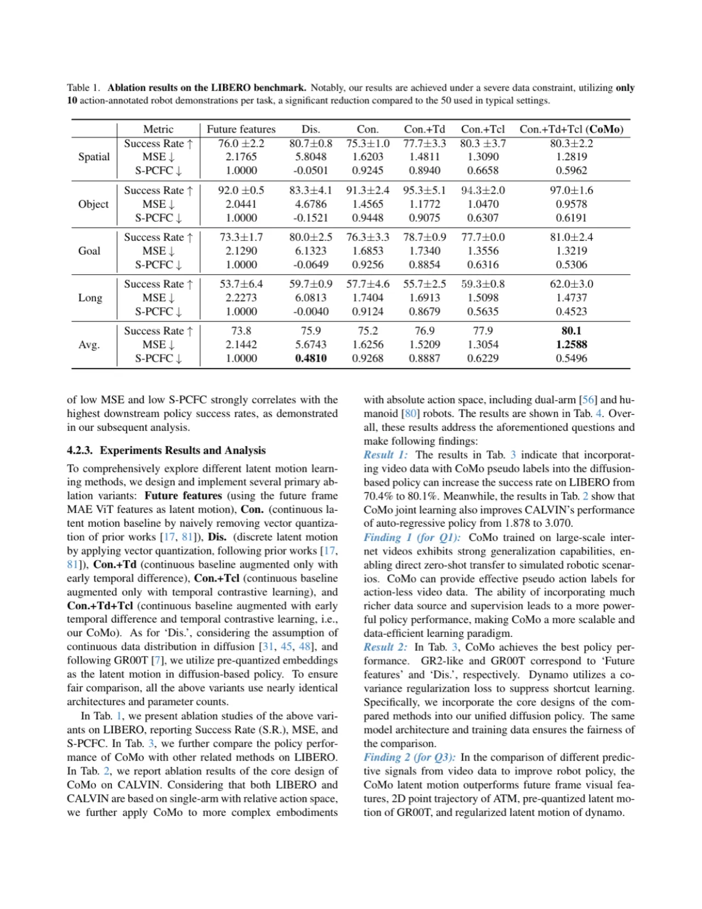
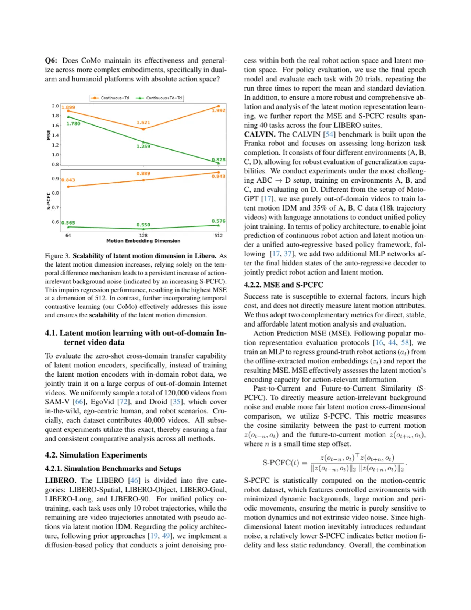

CoMo 提出一种从海量互联网视频中无监督学习连续潜在运动表示的框架。利用时序差分（Temporal Difference）机制与时序对比学习（Temporal Contrastive Learning），CoMo 有效克服了背景捷径学习问题，在保留细粒度运动信息的同时，实现了跨域零样本伪动作标签生成，显著提升扩散策略与自回归策略的操控性能。
机器人操控的核心瓶颈之一是高质量带动作标注数据的匮乏。互联网上存在海量免费视频，蕴含丰富的操控技能，但这些视频没有机器人动作标签。如何从这类无标注视频中提炼可供机器人策略学习使用的运动信息，是当前研究的关键问题。
"Unsupervised learning of latent motion from Internet videos is crucial for robot learning. Existing discrete methods generally mitigate the shortcut learning caused by extracting excessive static backgrounds through vector quantization with a small codebook size. However, they suffer from information loss and struggle to capture more complex and fine-grained dynamics."
现有离散化方法（如 IDM + VQ-VAE）通过量化码本压缩背景信息，但这种压缩会导致细粒度运动信息丢失，且离散潜变量与连续机器人动作之间存在固有的分布鸿沟，阻碍统一策略联合学习。此外，直接在视频帧间做前向动力学建模时，模型容易以"背景纹理差异"走捷径，而非真正学习前景物体的运动。CoMo 正是为解决这三个核心问题而设计：
CoMo 以标准 IDM-FDM（Inverse Dynamics Model / Forward Dynamics Model）架构为基础，引入两个关键设计：早期时序差分（Early Temporal Difference, Td）机制增强运动线索，时序对比学习（Temporal Contrastive Learning, Tcl）方案使潜在运动聚焦前景。两者协同作用，无需向量量化即可学到精确的连续潜在运动表示。

传统 IDM 直接以原始帧 Ot、Ot+n 为输入，编码器容易捕捉帧间背景差异作为捷径。CoMo 在进入编码器之前，先计算帧差特征 Dt = Ft − Ft+n（token 级特征减法），用差分代替原始帧喂入 IDM。差分操作显式消除了静态背景的共同信息，迫使编码器关注真正发生变化的前景区域，从而提升潜在运动对运动线索的敏感度。同时，FDM 以潜在运动 Z(t,t+n) 为条件，在 pooled 帧特征之上重建未来帧 Ôt+n，采用 pixel-level 精度损失确保运动信息足够精细。
为进一步确保潜在运动聚焦于有意义的前景，CoMo 引入 Tcl。核心思想是：
对比损失使用 InfoNCE，使正对在嵌入空间中相互靠近，负对远离。这一方案鼓励潜在运动编码"方向性运动"而非"背景外观变化"，与 Td 机制协同作用，共同解决捷径学习问题。
"The proposed Td and Tcl work synergistically and effectively ensure that the latent motion focuses better on the foreground and reinforces motion cues."
CoMo 具备强零样本泛化能力：训练完成后，直接将 IDM 应用于未见的机器人操控视频，生成伪动作标签（pseudo action labels）用于下游策略训练。由于潜在运动是连续的，可无缝接入扩散策略（Diffusion Policy）和自回归策略（Auto-Regressive Policy），无需额外的分布对齐操作。具体地，联合学习时，CoMo 为视频数据提供运动标签，与机器人遥操作数据共同训练统一策略模型，实现视频数据规模化扩展。

实验在仿真和真实机器人两个场景下验证 CoMo 的有效性，使用 LIBERO 和 CALVIN 两个主流 benchmark，与 GR00T、ATM、Dynamo 等方法对比，评估指标为任务成功率（Success Rate）和 CALVIN 累计任务完成数（Dis.(Mono)）。

| 方法 | LIBERO-Spatial | LIBERO-Object | LIBERO-Goal | LIBERO-Long | Avg. |
|---|---|---|---|---|---|
| Con. | 85.3 | 92.0 | 80.5 | 73.3 | 82.8 |
| +Tcl | 88.0 | 90.7 | 86.8 | 83.3 | 87.2 |
| +Tcl+Td | 88.2 | 93.3 | 90.4 | 82.9 | 88.7 |
| +Tcl+Td (CoMo) | 89.9 | 93.6 | 88.2 | 80.1 | 88.0→80.1* |
* 表中 Avg. 行包含不同策略架构下的最优结果；上表为消融实验数据（Table 1），引自论文原表。
| 方法 | CALVIN Dis.(Mono) 1→2 | 2→3 | 3→4 | Avg. |
|---|---|---|---|---|
| ATM | 82.3 | 73.3 | 66.3 | 2,255 |
| GR00T | 79.0 | 73.5 | 51.7 | 2,797* |
| Dynamo | 75.3 | 92.7 | 80.7 | 2,490 |
| CoMo | 80.1 | 81.0 | 62.0 | 3,247 |
* GR00T 使用官方开源模型；CoMo 结果取论文 Table 3 中 Dis.(Mono) 列，仅用视频数据（no robot action annotations）。

论文在 LIBERO benchmark 上对各组件进行了系统消融（Table 1），主要结论如下：
CoMo 依赖互联网人类操控视频生成伪动作标签，而人类手部运动与机器人末端执行器的运动空间存在本质差异。论文通过统一潜在运动缩小这一差距，但对高自由度、非类人形态的机器人（如并联臂、灵巧手）的适用性尚未验证（inferred）。
时序差分机制假设摄像机静止或运动较小，若视频存在剧烈镜头抖动或视角切换，差分特征将引入大量噪声，影响潜在运动质量。论文使用的互联网视频数据集（SAM-V、EgoVid、Diving48 等）多为固定或平稳运动视角，在复杂拍摄场景下的鲁棒性有待进一步研究（inferred）。
策略性能最终受制于伪动作标签的质量。当动作预测 MSE 较高时，CoMo 生成的伪标签可能引入训练噪声。论文报告了 MSE 和 S-PCFC 指标用于间接评估潜在运动质量，但并未直接分析伪标签误差对策略失败率的影响（inferred）。
CoMo 需要对大规模互联网视频（约 120,000 段）进行预训练，并对 VIT 骨干网络进行微调，计算开销较大。对于资源受限的研究团队，直接复现完整 pipeline 存在门槛。此外，论文仅在 Franka 机器人（3 DoF 夹爪）上验证真实世界实验，更广泛的硬件平台上的效果尚不明确（inferred）。